Kubernetes调度和资源管理
目录
- Kubernetes 的调度过程；
- Kubernetes 的基础调度能力（资源调度、关系调度）；
- Kubernetes 高级调度能力（优先级、抢占）。
Kubernetes 调度过程
调度过程概览
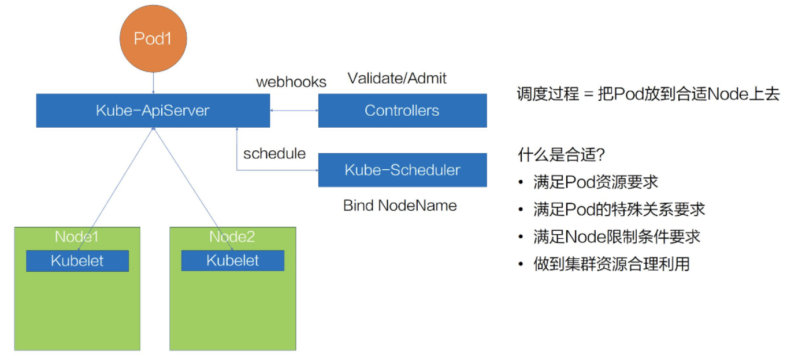
调度过程解析
- 用户通过 kube-ApiServer 提交描述Pod的yaml
- ApiServer 会先把这个待创建的请求路由给我们的 webhooks 的 Controlles 进行校验
- ApiServer 会在集群里面生成一个 pod，但此时生成的 pod，它的 nodeName 是空的，并且它的 phase 是 Pending 状态
- kube-Scheduler 以及 kubelet 都能 watch 到这个 pod 的生成事件，kube-Scheduler 发现这个 pod 的 nodeName 是空的之后，会认为这个 pod 是处于未调度状态
- kube-Scheduler 把这个 pod 拿到自己里面进行调度，通过一系列的调度算法，包括一系列的过滤和打分的算法后，Schedule 会选出一台最合适的节点，并且把这一台节点的名称绑定在这个 pod 的 spec 上，完成一次调度的过程
- 更新完 nodeName 之后，在 Node1 上的这台 kubelet 会 watch 到这个 pod 是属于自己节点上的一个 pod。它会把这个 pod 拿到节点上进行操作，包括创建一些容器 storage 以及 network，最后等所有的资源都准备完成，kubelet 会把状态更新为 Running
调度的关键点
调度的核心：就是把 pod 放到合适的 node 上。 何为合适？
1、首先要满足 pod 的资源要求;
2、其次要满足 pod 的一些特殊关系的要求;
3、再次要满足 node 的一些限制条件的要求;
4、最后还要做到整个集群资源的合理利用。
Kubernetes 是怎么做到满足这些 pod 和 node 的要求的？
Kubernetes基础调度力
调度能力划分
-
资源调度
Kubernetes 基本的一些 Resources 的配置方式，还有 Qos 的概念，以及 Resource Quota 的概念和使用方式 -
关系调度
在关系调度上，介绍两种关系场景:
2.1 pod 和 pod 之间的关系场景，包括怎么去亲和一个 pod，怎么去互斥一个 pod?
2.2 pod 和 node 之间的关系场景，包括怎么去亲和一个 node，以及有一些 node 怎么去限制 pod 调度上来。
如何满足Pod资源要求
资源配置方法
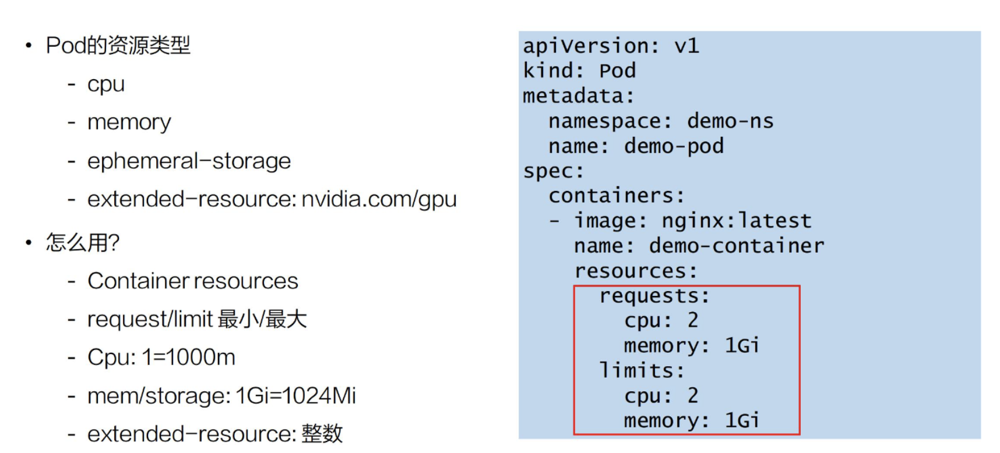
Pod资源类型
- cpu
- memory
- ephemeral-storage
- extended-resource: nvidia.com/gpu
resources
- request: 对这个 pod 基本保底的一些资源要求
- limit: 代表的是对这个 pod 可用能力上限的一种限制
由 request/limit 来引出 Qos概念
资源QoS类型
Qos: Quality of Service
其实是 Kubernetes 用来表达一个 pod 在资源能力上的服务质量的标准,Kubernetes 提供了三类的 Qos Class:
- 第一类是 Guaranteed:它是一类高的 Qos Class，一般用 Guaranteed 来为一些需要资源保障能力的 pod 进行配置
- 第二类是 Burstable，它其实是中等的一个 Qos label，一般会为一些希望有弹性能力的 pod 来配置 Burstable；
- 第三类是 BestEffort，通过名字我们也知道，它是一种尽力而为式的服务质量。
问题：K8s中用户没法指定自己的 pod 是属于哪一类 Qos，而是通过 request 和 limit 的组合来自动地映射上 Qos Class
Pod QoS配置
如何通过 request 和 limit 的组合来确定我们想要的 QoS Level
- Guaranteed: CPU/Memory 必须 request==limit，其他的资源可以不相等
- Burstable: CPU/Memory request 和 limit 不相等
- BestEffort: 所有资源request/limit 必须都不填
资源QoS用法
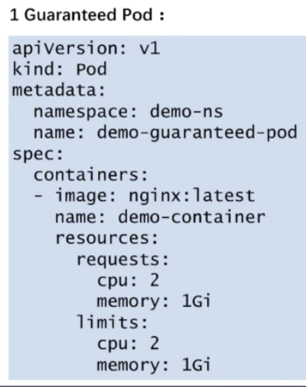 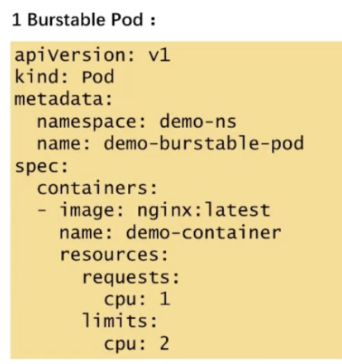 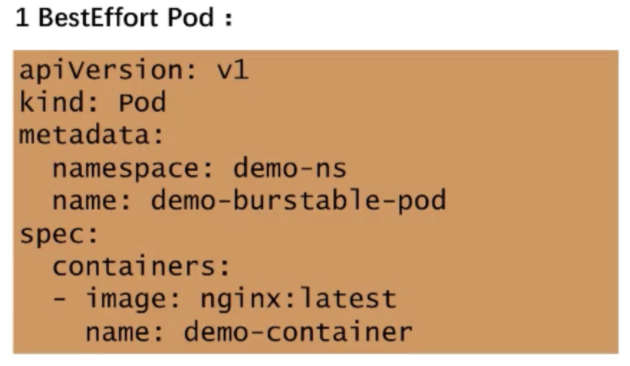
资源和QoS 关系
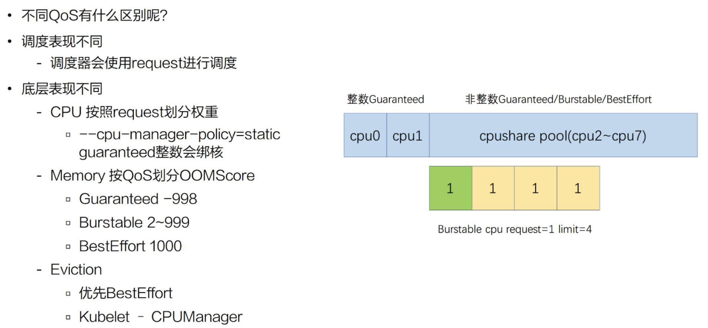
- 调度器只会使用 request 进行调度
- 不同的 QoS 表现不相同,
- 开启 kubelet cpu-manager-policy=static 特性时， 如果它的 request 是一个整数，它会对 Guaranteed Pod 进行绑核
- 非整数的 Guaranteed/Burstable/BestEffort，它们的 CPU 会放在一块，组成一个 CPU share pool，然后它们会根据不同的权重划分时间片来使用
另外，memory 上也会按照不同的 Qos 进行划分:OOMScore
- Guaranteed，它会配置默认的 -998 的 OOMScore
- Burstable,会根据内存设计的大小和节点的关系来分配 2-999 的 OOMScore
- BestEffort 会固定分配 1000 的 OOMScore
OOMScore 得分越高的话，在物理机出现 OOM 的时候会优先被 kill 掉
eviction:
- 会优先考虑驱逐 BestEffort 的 pod
资源 Quota
假如集群是由多个人同时提交的，或者是多个业务同时在使用，我们肯定要限制某个业务或某个人提交的总量，防止整个集群的资源都会被使用掉，导致另一个业务没有资源使用
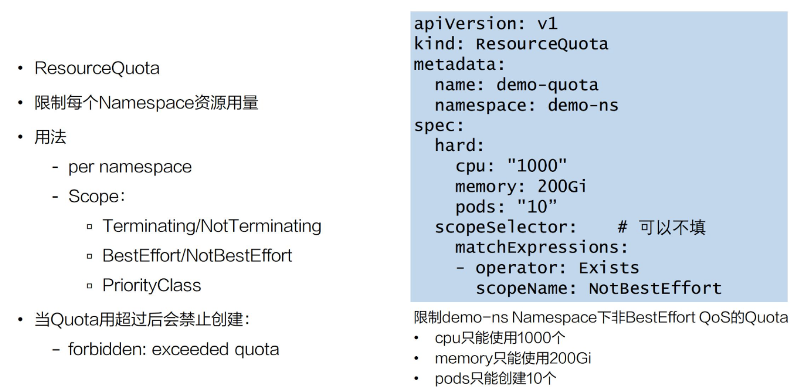
解析
ResourceQuota: 限制 namespace 资源用量
上图右侧的 yaml 所示,spec 包括了一个 hard 和 scopeSelector
hard: 和 Resourcelist 很像,比 ResourceList 更丰富一点,可以填写一些 Pod，这样可以限制 Pod 数量能力
scopeSelector:为这个 Resource 方法定义更丰富的索引能力,
比如上面的例子中，索引出非 BestEffort 的 pod，限制的 cpu 是 1000 个，memory 是 200G，Pod 是 10 个，然后 Scope 除了提供 NotBestEffort，它还提供了更丰富的索引范围，包括 Terminating/Not Terminating，BestEffort/NotBestEffort，PriorityClass。
- 用 ResourceQuota 方法来做到限制每一个 namespace 的资源用量，从而保证其他用户的资源使用
小结
基础资源的使用方式，做到了如何满足 Pod 资源要求。下面做一个小结：
- Pod 要配置合理的资源要求
- CPU/Memory/EphemeralStorage/GPU
通过 Request 和 Limit 来为不同业务特点的 Pod 选择不同的 QoS
- Guaranteed：敏感型，需要业务保障
- Burstable：次敏感型，需要弹性业务
- BestEffort：可容忍性业务
为每个 NS 配置 ResourceQuota 来防止过量使用，保障其他人的资源可用
如何满足Pod/Node 特殊关系/条件要求
如何满足Pod 与Pod 关系要求
- podAffinity/podAntiAffinity
- required /preferred
如何满足Pod 与Node 关系要求
主要又两类:
- NodeSelector: 举例：必须要调度 Pod 到带了 k1: v1 标签的 Node 上，这时可以在 Pod 的 spec 中填写一个 nodeSelector 要求，比如 k1: v1。这样我的 Pod 就会强制调度到带了 k1: v1 标签的 Node 上
- NodeAffinity:
小结
首先假如有需求是处理 Pod 与 Pod 的时候，比如 Pod 和另一个 Pod 有亲和的关系或者是互斥的关系，可以给它们配置下面的参数：
PodAffinity
PodAntiAffinity
假如存在 Pod 和 Node 有亲和关系，可以配置下面的参数：
NodeSelector
NodeAffinity
假如有些 Node 是限制某些 Pod 调度的，比如说一些故障的 Node，或者说是一些特殊业务的 Node，可以配置下面的参数：
Node – Taints
Pod – Tolerations
Kubernetes 高级调度能力
优先级调度目的
在资源不够情况下，我们怎么做到集群的合理利用呢？
- 先到先得策略 (FIFO) -简单、相对公平，上手快
- 优先级策略 (Priority) - 符合日常公司业务特点
因为公司业务里面肯定是有高优先级的业务和低优先级的业务，所以优先级策略会比先到先得策略更能够符合日常公司业务特点
Priority 和 Preemption
- v 1.14 -stable
- Priority & Preemption default is On
优先级调度设置
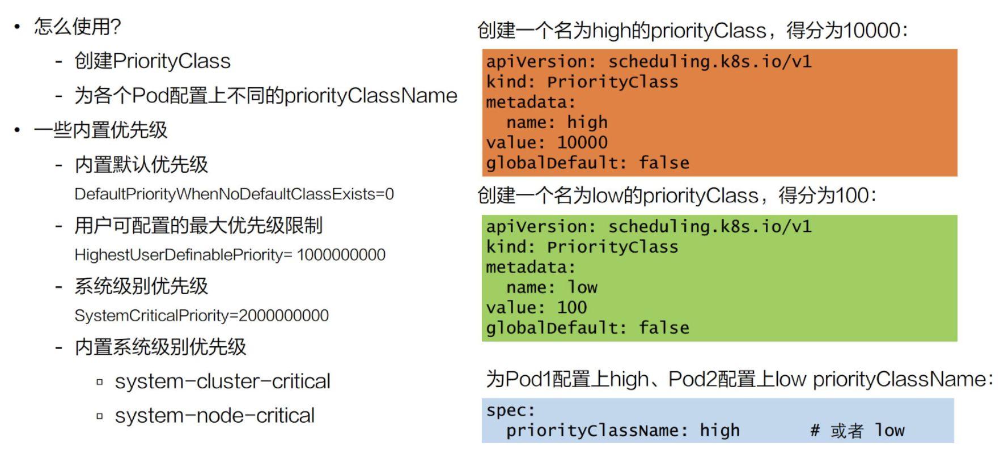
设置解析
- 需要创建一个 priorityClass
1.1 是创建名为 high 的 priorityClass，它是高优先级，得分为 10000；
1.2 然后还创建了一个 low 的 priorityClass，它的得分是 100。 - 为每个 Pod 配置上不同的 priorityClassName
2.1 给 Pod1 配置上了 high，Pod2 上配置了 low priorityClassName
内置优先级配置
- Kubernetes 内置了默认的优先级,DefaultpriorityWhenNoDefaultClassExistis,默认所有Pod此项均为0
- 用户可配置最大优先级限制：HighestUserDefinablePriority = 10000000000(10 亿)
- 系统级别优先级：SystemCriticalPriority = 20000000000(20 亿)
优先级调度过程
只触发优先级调度但是没有触发抢占调度的流程
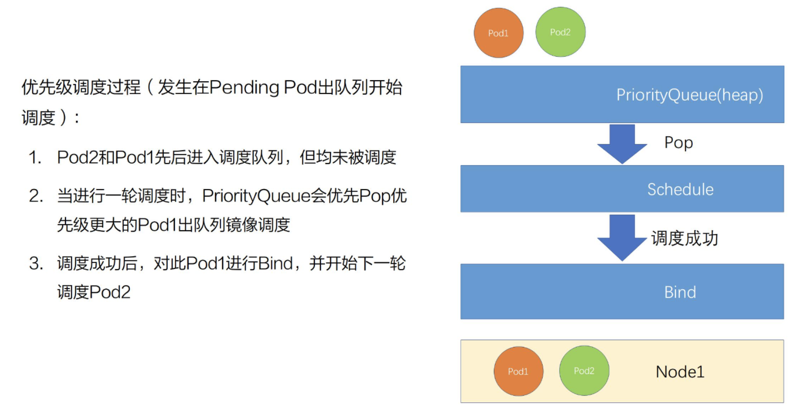
优先级抢占过程
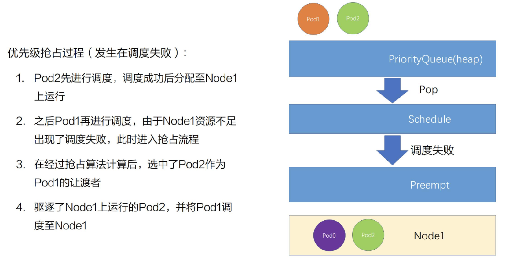
优先级抢占策略
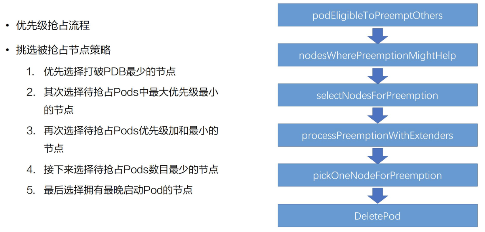
-
一个 Pod 进入抢占的时候，会判断 Pod 是否拥有抢占的资格，有可能上次已经抢占过一次，如果符合抢占资格，它会先对所有的节点进行一次过滤，过滤出符合这次抢占要求的节点，如果不符合就过滤掉这批节点
-
从过滤剩下的节点中，挑选出合适的节点进行抢占。这次抢占的过程会模拟一次调度，也就是把上面优先级低的 Pod 先移除出去，再把待抢占的 Pod 尝试能否放置到此节点上。然后通过这个过程选出一批节点，进入下一个过程叫 ProcessPreemptionWithExtenders。这是一个扩展的钩子，用户可以在这里加一些自己抢占节点的策略，如果没有扩展的钩子，这里面是不做任何动作的
-
接下来的流程叫做 PickOneNodeForPreemption，就是从上面 selectNodeForPreemption list 里面挑选出最合适的一个节点，这是有一定的策略的
3.1 优先选择打破 PDB 最少的节点；
3.2 其次选择待抢占 Pods 中最大优先级最小的节点；
3.3 再次选择待抢占 Pods 优先级加和最小的节点；
3.4 接下来选择待抢占 Pods 数目最小的节点；
3.5 最后选择拥有最晚启动 Pod 的节点
小结
调度的高级策略，在集群资源紧张的时候也能合理调度资源
- 创建自定义的一些优先级类别 (PriorityClass)；
- 给不同类型 Pods 配置不同的优先级 (PriorityClassName)；
- 通过组合不同类型 Pods 运行和优先级抢占让集群资源和调度弹性起来。